This project was part of the Reply Creative Challenge 2022, under the Customer Experience category. The brief focused on reimagining the Heinemann Duty Free shopping experience, especially in a post-pandemic world where retail habits were shifting rapidly. With Gen Z travelers expecting more personalized, seamless, and digital-first interactions, traditional duty-free retail was struggling to keep pace. Our challenge was to create a mobile solution that bridged the gap between physical and digital shopping, strengthened brand loyalty, and made airport retail feel intuitive and engaging again.
My Role
UX/Market Research, Journey Mapping and User Personas, Wireframing, Business Pitch Storyboarding.
Tools
Miro, Figma, Premiere Pro.
Team Members
01 / brainstorming
We kicked off the project by organising multiple brainstorming sessions among the 4 person team. We then simultaneously worked on gathering market research data and conduction a SWOT Analysis and a Competitor Analysis to deepend our understanding of Heneimann and it's operations at the time.
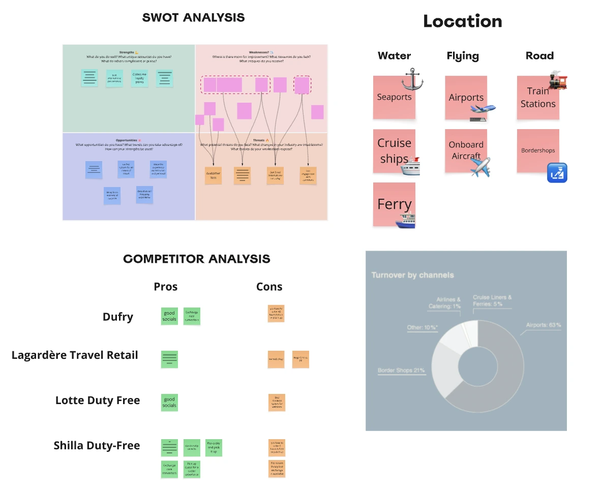
Insight: Gen Z travelers expect their digital tools to alleviate physical transit anxiety, not add another layer of commerce to navigate.
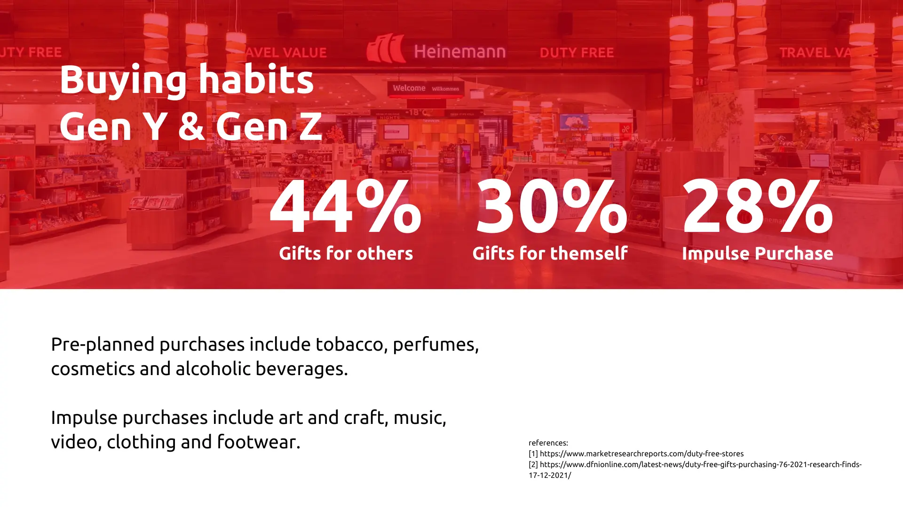
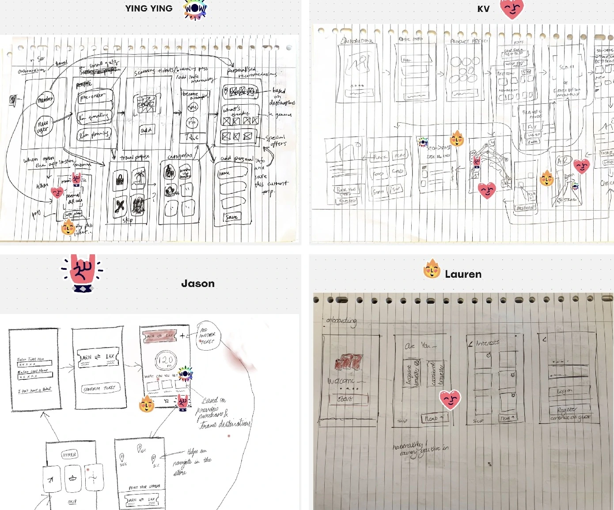
02 / UX Research
Working alongside the 4-member JeKyLL Design Team, we conducted a thorough UX Research phase. Our goal was to uncover exactly where the friction lived in the current duty-free transit experience. We made use of two User Personas and a Customer Journey Map and collated our findings on Miro, while using Figma to build the high-fidelity prototype solutions.
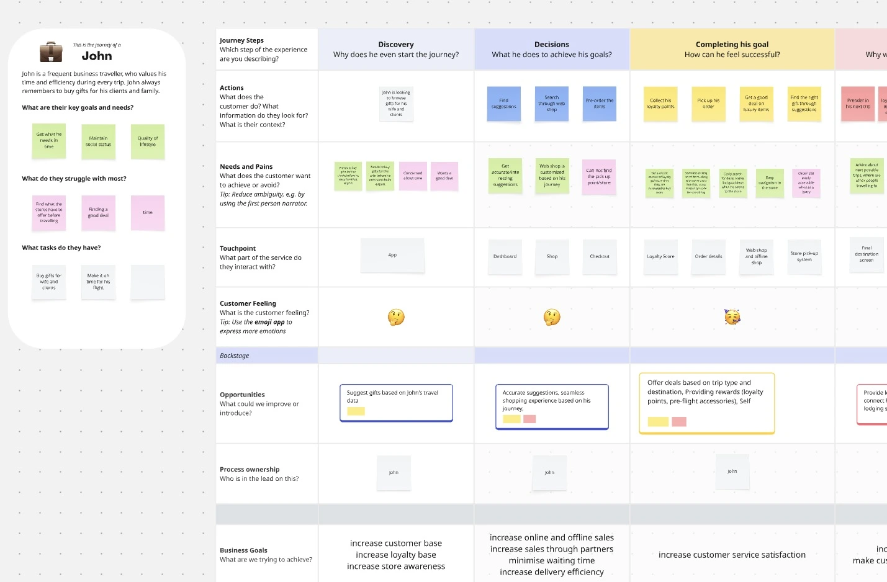
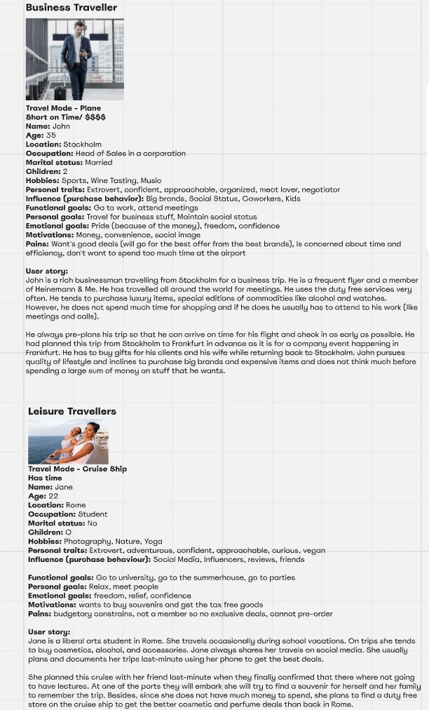
During the research journey we understood that it was important for us to look at the bigger picture and not restrict our design process to only airport transit, since Heinemann operates their duty-free services across multiple transit authorities.

03 / Design system
Through initial brainstorming sessions, UX Research and an understanding of Heinemann's current brand aesthetics we established a new design system characterized by bold typography, high-contrast brand colors, and clear component architecture to ensure the app felt native and intuitive without breaking off the identity of Heinemann from their long-term customers.
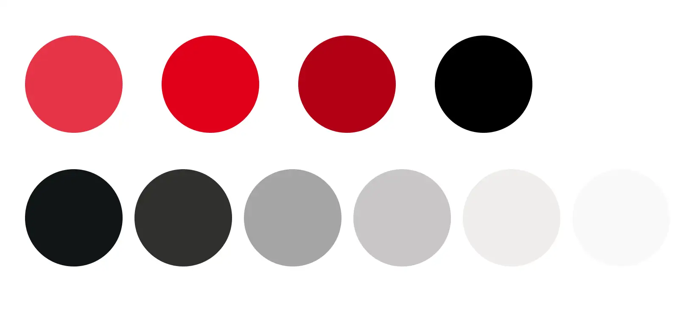
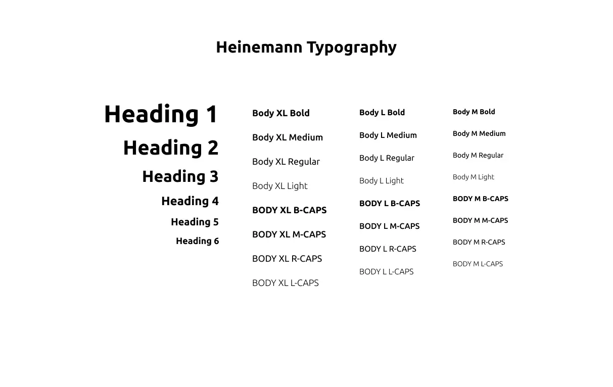
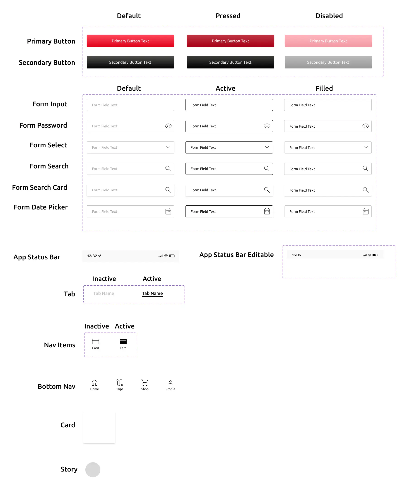
While settup up the new brand identity, we brainstormed new names for the travel companion app, eventually landing on Travel U.
04 / Interface Design
The final deliverable was a high-fidelity Figma prototype that introduced a new brand name, integrated live market stats, and featured a comprehensive rewards system. The dashboard was designed to provide an overview of the traveler's journey, profile setup, and an AR-walkthrough simulation.
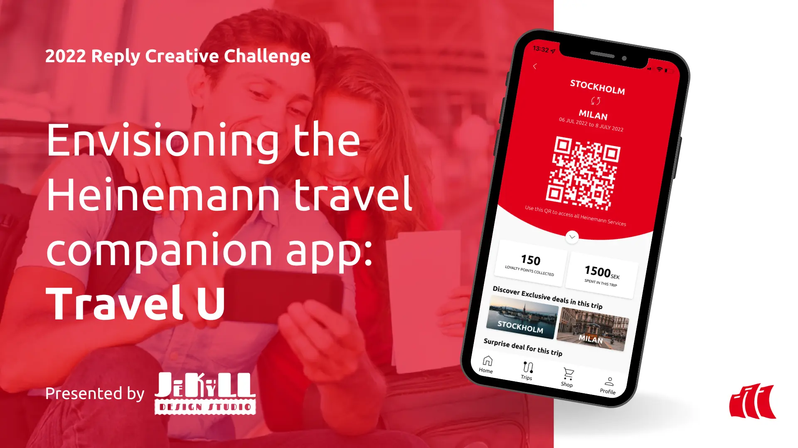
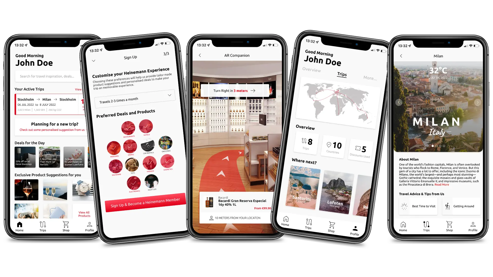
05 / The Final Pitch in Milan
We collated our research process, app walkthrough, and business strategy into a final project report and a pitch deck. This culminated in our team pitching the concept directly to Heinemann representatives at the Reply Xchange Convention in Milan, Italy where our idea and app were viewed among a sizeable gathering of business executives and creative enthusiasts.


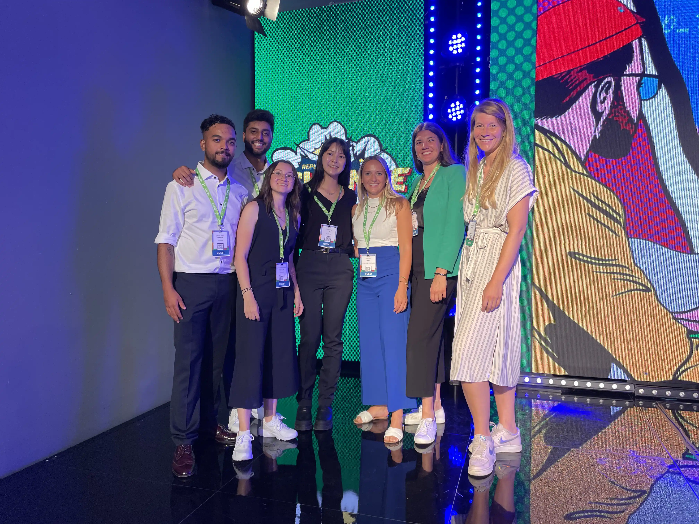
We summarized our business idea and presented a walkthrough of the Travel U app through a fun story-based video with a character named Emily based on our User Personas.